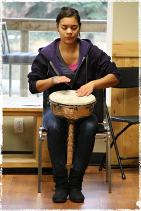

YWAM Canada has a variety of ministries not only in Canada, but in Alaska and Greenland as well. For more information, please contact the ministries below.

What is a DTS? Do a DTS Internationally Other Schools in Canada Visit the University Of the Nations YWAM Canada News